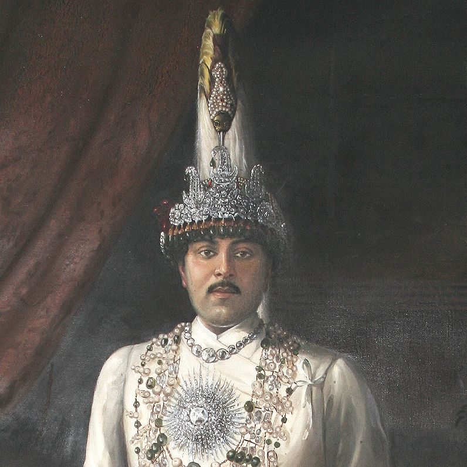

Tribhuwan Bir Bikram Shah ( 30 June 1906 – 13 March 1955) was King of Nepal from 11 December 1911 until his death. Born in Kathmandu, the capital city of Nepal, he ascended to the throne at the age of five, upon the death of his father, Prithvi Bir Bikram Shah, and was crowned on 20 February 1913 at the Nasal Chowk, Hanuman Dhoka Palace in Kathmandu, with his mother acting as regent. At the time of his crowning, the position of monarch was largely ceremonial, with the real governing power residing with the Rana family.
Tribhuwan Bir Bikram Shah
King of Nepal

Biography
Born on June 23, 1906, the late King Tribhuwan Bir Bikram Shah Dev, King of Nepal, is also called the ‘father of the nation’ as he was one of the key figure in bringing democracy to the country and abolishing the Rana rule. He ascended the throne at the age of five, after the death of his father Prithvi Bir Bikram Shah Dev, in the year 1913. The coronation had taken place in Nasal Chowk in Hanuman Dhoka Palace in Kathmandu, as was the tradition. Although there were kings, the power lay in the hands of the hereditary Rana Prime Ministers.
During the World War I, the Ranas wanted to join the war in support of Britain and sent troops to go to the war. However, by the mid-1930s, Praja Parishad was established by those anti-Ranas in Nepal and the King himself worked together with it until the Ranas banned the liberal movements and executed their leadership. The King worked closely with Praja Parishad to abolish the Rana rule because of which, he went into exile in India in an attempt to bring down the regime. He left with his son Mahendra and his eldest grandson Birendra leaving behind one of his grandsons Gyanendra, however, in response to his act, the Ranas made Gyanendra the king of Nepal which led to huge mass demonstrations in the country compelling the last Rana Prime Minister Mohan Sumsher to come into negotiations with King Tribhuvan and the Nepali Congress.
The King returned as a monarch from India on February 18, 1951 and three days after his return, he formally declared the end of the Rana rule and established democratic system, however, Mohan Sumsher continued as a Prime Minister for few more months.
On March 13, 1955, late King Tribhuvan Bir Bikram Shah Dev died in Zurich, Switzerland under mysterious circumstances at the age of eighty four leaving his eldest son Mahendra as his successor. King Tribhuvan is regarded as the ‘father of the nation’ for his contributions and active participation in abolishing the century old familial Rana rule and establishing democracy in Nepal. There are many places and institutions named after him like the only international airport in Kathmandu, Tribhuvan International Airport, a city in Dang named Tribhuvan Nagar and the country’s largest university, Tribhuvan University.
THe had also received Grand Cordon of the Order of the Supreme Sun of the Kingdom of Afganistan (1950), Grand Cross of the Order of Merit of the Republic of Italy (1954) and Grand Cross of the Legion of Honor of France (1954).
Tribhuvan died in 1955 in Zürich, Switzerland. He was succeeded by his eldest legitimate son, Mahendra.
The international airport in Kathmandu, Tribhuvan International Airport, the oldest highway in Nepal Tribhuvan Highway, the 2nd oldest association football tournament in Nepal, Tribhuvan Challenge Shield, a city, Tribhuvannagar in Dang valley, and the country's largest university (Tribhuvan University) are named after him.
Gallery
Tribhuwan Bir Bikram Shah
1937, King Tribhuwan Bir Bikram Shah
Crowning Tribhuvan of Nepal
1991, Crowning Tribhuvan of Nepal

King Tribhuwan Bir Bikram Shah
Post office sticker, King Tribhuwan Bir Bikram Shah